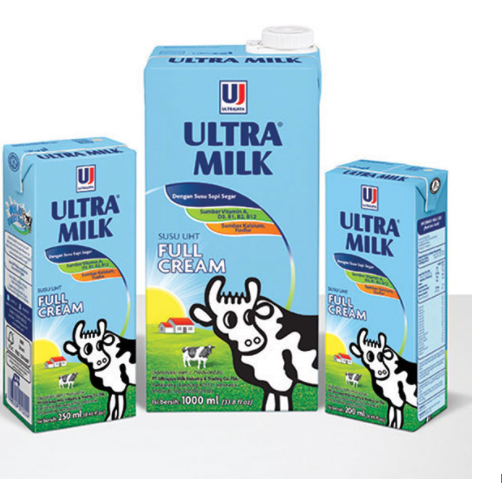

Ultra Milk Full Cream
High quality fresh milk contains the natural balanced goodness of protein, carbohydrates, vitamins, and, minerals, like Calcium, Magnesium and, Phosphorus, making it therefore a complete & balanced nutrition for daily family consumption. It contains all the essential nutrition, needed by growing children and adults.

FEATURES/BENEFITS
Ultra Milk Full Cream is ideal for daily drinking consumption. It is also best used for cooking and baking. The product is recommended for consumers aged 1 year and above. Ultra Milk Full Cream is the great natural milk suitable for the whole family. It provides a rich source of protein, vitamins and minerals and is available in both fresh and long life products. Drink Ultra Milk for its great natural taste and benefit from the goodness of nature! Ultramilk Full Cream is available in 3 sizes : 1000 ml, 250 ml and 200 ml.
MANUFACTURING PROCESS
Fresh milk is processed through a UHT (Ultra High Temperature) treatment, in which it is quickly heated at a high temperature of 140° C for 4 seconds to eliminate all pathogen bacteria. The very short heating time ensures minimal loss of its nutritional value and freshness. After the milk is aseptically processed, it is immediately packed aseptic cartons which have 6 layers. These cartons comprise of layers of food grade polyethylene plastic, aluminum foil and paper to prevent Ultra Violet light, air and bacteria from coming in contact with the milk. The perfect combination of UHT Sterilization process and Aseptic packaging ensures Ultra Milk remains fresh from an extended time without the use of any preservatives. The product has also gained the official Halal Certificate issued by MUI (The Indonesian Council of Ulamas).
STORAGE AND SHELF LIFE
Before Opening:
Ultra Milk can be kept at room temperature without refrigeration and has shelf life of 10 months. The product should be stored in a dry, clean and cool place.
After Opening:
When after oppening the content isn't finished yet, the packaging must be closed tightly and kept in the refrigerator at a temperature of 4°C. The remaining product must be finished within 7 days. However, it is recommended to finish up the product once the pack is opened to enjoy the milk at its freshest.
INGREDIENTS
Fresh Milk